ⓘ Cách đọc trang này
Phần chữ thường do Claude viết lại theo ý ghi chú, tác giả sẽ duyệt lại. Nút "Ghi chú gốc" dưới mỗi tiêu đề mở danh sách các đoạn ghi chú tương ứng.
Phương trình vi phân và eAt
Bài 22 là \(u_{k+1} = Au_k\): nhảy từng bước, lời giải có \(\lambda^k\). Bài này là phiên bản liên tục \(du/dt = Au\): lời giải có \(e^{\lambda t}\). Cùng một công thức, và eigenvalue lại cho biết hệ sẽ tắt dần, đứng yên hay nổ tung. Cuối bài là ma trận mũ \(e^{At}\).
- Cần biết trước
- Chéo hoá A = SΛS⁻¹ (bài 22) · Hàm mũ, chuỗi Taylor
- Học tiếp
- Ma trận Markov (bài 24) · Ma trận đối xứng (bài 25)
- Video giảng lại
- Chưa có video cho bài này
1Ví dụ: hai đại lượng chảy qua lại
Ghi chú gốc · 8 đoạn
Lúc đầu mọi thứ nằm ở \(u_1\); theo thời gian nó chảy dần sang \(u_2\). Eigenvalue đoán được ngay không cần giải: vết \(= -3\) là tổng, định thức \(= 0\) là tích (hai cột tỉ lệ nhau).
Vậy suy ra ngay sẽ có một eigenvalue bằng 0. Và từ việc tổng của chúng bằng -3 nên suy ra luôn eigenvalue còn lại là -3.
\(\lambda_1 = 0\): eigenvector nằm trong nullspace của \(A\), \(x_1 = (2, 1)\). \(\lambda_2 = -3\): nullspace của \(A + 3I = \begin{bmatrix} 2 & 2 \\ 1 & 1 \end{bmatrix}\), \(x_2 = (1, -1)\) (hay \((-1, 1)\), cùng phương nên như nhau).
![Bảng: Example du1/dt = −u1 + 2u2, du2/dt = u1 − 2u2, A = [−1 2; 1 −2]](img/u4317aouiq9.png)
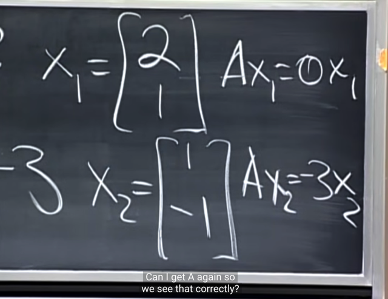
2Lời giải: c₁e^(λ₁t)x₁ + c₂e^(λ₂t)x₂
Ghi chú gốc · 7 đoạn
Mỗi cặp \(\lambda, x\) cho một nghiệm dạng mũ \(u = e^{\lambda t}x\). Thế vào để kiểm: vế trái \(\frac{d}{dt}(e^{\lambda t}x) = \lambda e^{\lambda t}x\); vế phải \(A e^{\lambda t}x = e^{\lambda t}Ax = \lambda e^{\lambda t}x\). Bằng nhau. Cộng các nghiệm đó lại được nghiệm tổng quát, giống hệt bài 22 với \(\lambda^k\) đổi thành \(e^{\lambda t}\):
\(c_1, c_2\) lấy từ \(u(0) = Sc\): \(c_1\begin{bmatrix} 2 \\ 1 \end{bmatrix} + c_2\begin{bmatrix} 1 \\ -1 \end{bmatrix} = \begin{bmatrix} 1 \\ 0 \end{bmatrix}\) cho \(c_1 = c_2 = \tfrac13\). Vậy
Phần \(\lambda = 0\) đứng yên (\(e^{0t} = 1\)), phần \(\lambda = -3\) tắt dần. Cuối cùng hệ dừng ở \(\tfrac13 x_1\): trạng thái dừng (steady state).
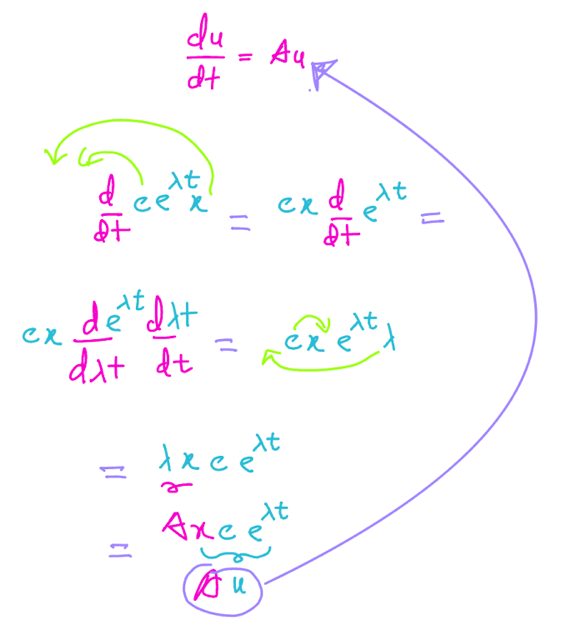
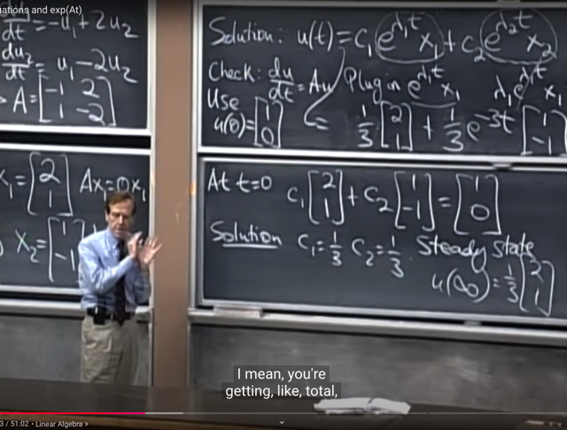
Kéo chấm xanh để đổi điểm đầu u(0), kéo thanh t để chạy thời gian, hoặc bấm một ví dụ có sẵn để đổi ma trận A. Bảng tím bên dưới cho biết hệ tắt dần, dừng hay nổ tung.
Hình này cho thấy gì?
Đầu vào: ma trận \(A\), điểm đầu \(u(0)\) (kéo chấm xanh) và thời điểm \(t\). Kết quả: đường đi của \(u(t)\) (cam đậm tới thời điểm \(t\), cam nhạt là phần sau), các mũi tên xám là hướng \(Au\) tại từng điểm, đường đứt là các eigenvector. Bên dưới: \(\lambda\), \(c_1, c_2\) và hệ thuộc loại nào. Với ví dụ của bài, kéo \(u(0)\) đi đâu thì đường đi cũng trượt dọc \(x_2\) về đường \(x_1\) rồi dừng.
3Tắt dần, đứng yên hay nổ tung
Ghi chú gốc · 4 đoạn
Mọi thứ nằm ở các số \(e^{\lambda t}\). Nếu \(\lambda = a + bi\) thì \(|e^{\lambda t}| = e^{at}\), vì phần ảo chỉ làm xoay:
|e^(-3t)*e^(6it)| = |e^(-3t)| * |e^(6it)| = e^(-3t) * 1
- Ổn định, \(u(t) \to 0\): mọi \(\operatorname{Re}\lambda < 0\).
- Trạng thái dừng: một \(\lambda = 0\), các \(\lambda\) còn lại có \(\operatorname{Re}\lambda < 0\).
- Nổ tung: chỉ cần một \(\operatorname{Re}\lambda > 0\).
Với 2 × 2, ổn định khi và chỉ khi vết \(< 0\) và định thức \(> 0\). Vết âm thôi chưa đủ: \(\begin{bmatrix} -2 & 0 \\ 0 & 1 \end{bmatrix}\) có vết \(-1\) nhưng \(\lambda = 1\) làm nó nổ. Định thức dương mới bảo đảm hai \(\lambda\) cùng dấu (hoặc là cặp phức), và vết âm bảo đảm dấu đó là âm. Thử preset "Vết âm vẫn nổ" ở hình trên.
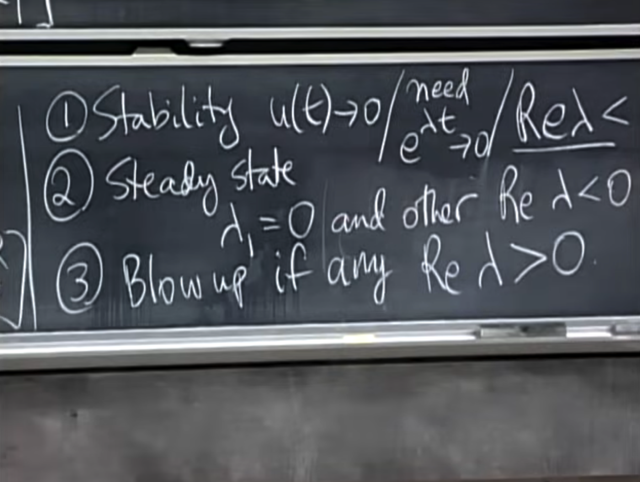
0" width="640" height="482" loading="lazy">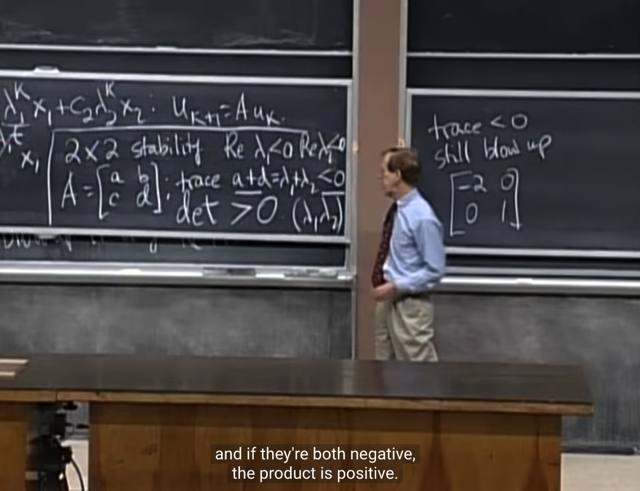
0; trace < 0 still blow up [−2 0; 0 1]" width="640" height="491" loading="lazy">4Đổi sang toạ độ eigenvector: các phương trình tách rời
Ghi chú gốc · 5 đoạn
Vì sao cách trên đúng? Ma trận \(A\) "trộn" \(u_1\) với \(u_2\). Viết \(u = Sv\), tức đo \(u\) theo các eigenvector. Thế vào:
Trong toạ độ eigenvector, \(n\) phương trình không còn dính nhau; mỗi cái là một phương trình vô hướng quen thuộc. Quay về \(u = Sv\) là ra công thức ở mục 2.
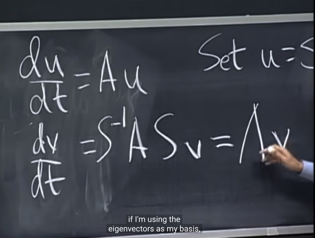
5Ma trận mũ eᴬᵗ
Ghi chú gốc · 8 đoạn
Với một số, nghiệm của \(du/dt = au\) là \(e^{at}u(0)\). Với ma trận cũng vậy: \(u(t) = e^{At}u(0)\). Nghĩa của \(e^{At}\) lấy từ chuỗi Taylor của \(e^x\):
Đạo hàm từng số hạng theo \(t\) rồi rút \(A\) ra ngoài được lại đúng chuỗi đó: \(\frac{d}{dt}e^{At} = Ae^{At}\), nên \(e^{At}u(0)\) thoả \(du/dt = Au\). Strang đặt cạnh nó chuỗi hình học \((I - At)^{-1} = I + At + (At)^2 + \cdots\). Khi \(A = S\Lambda S^{-1}\), mỗi \((At)^n = S\Lambda^nS^{-1}t^n\), rút \(S\) sang trái và \(S^{-1}\) sang phải:
Và \(u(t) = Se^{\Lambda t}S^{-1}u(0) = Se^{\Lambda t}c\), đúng là \(c_1e^{\lambda_1 t}x_1 + c_2e^{\lambda_2 t}x_2\). Bước rút \(S\) này cần \(A\) chéo hoá được; còn bản thân chuỗi \(e^{At}\) thì luôn có nghĩa.
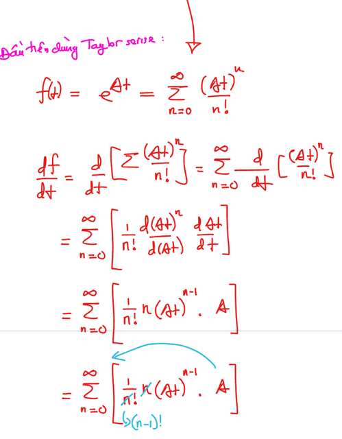
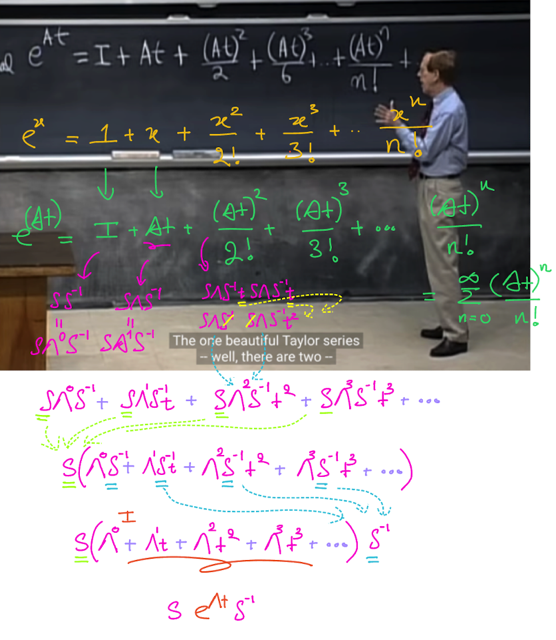
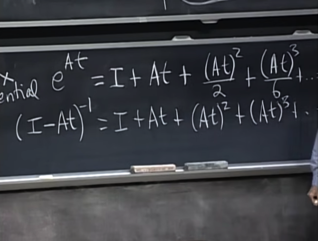
6Hai vùng ổn định
Ghi chú gốc · 4 đoạn
Đặt hai bài cạnh nhau trên mặt phẳng phức chứa các \(\lambda\):
- Lũy thừa \(u_{k+1} = Au_k\) tắt khi mọi \(|\lambda| < 1\): \(\lambda\) nằm trong hình tròn đơn vị.
- Vi phân \(du/dt = Au\) tắt khi mọi \(\operatorname{Re}\lambda < 0\): \(\lambda\) nằm bên trái trục ảo.
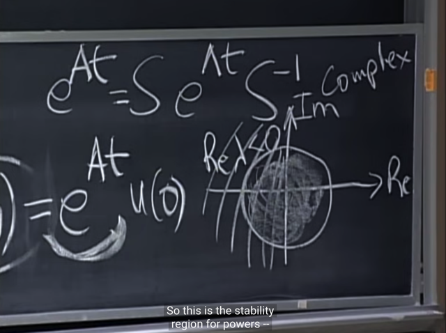
7Phương trình bậc hai thành hệ bậc một
Ghi chú gốc · 5 đoạn
Giống mẹo Fibonacci: với \(y'' + by' + ky = 0\), đặt \(u = (y', y)\). Hàng 1 là chính phương trình, hàng 2 là đẳng thức hiển nhiên \(y' = y'\):
Phương trình bậc 5 thì thành hệ 5 × 5: hàng đầu là các hệ số, các hàng sau là vector "một số 1". Preset "Lò xo" ở hình tương tác là trường hợp \(b = 0{,}5\), \(k = 4\): \(\lambda\) phức với phần thực âm, nên đường đi xoắn ốc vào gốc (dao động tắt dần).
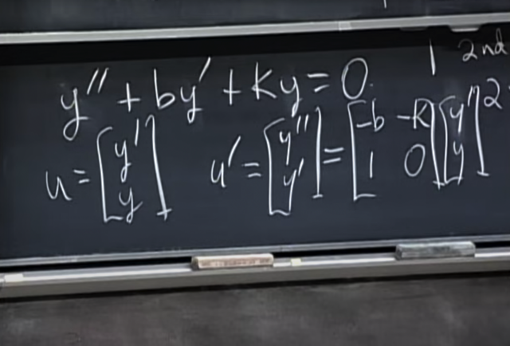